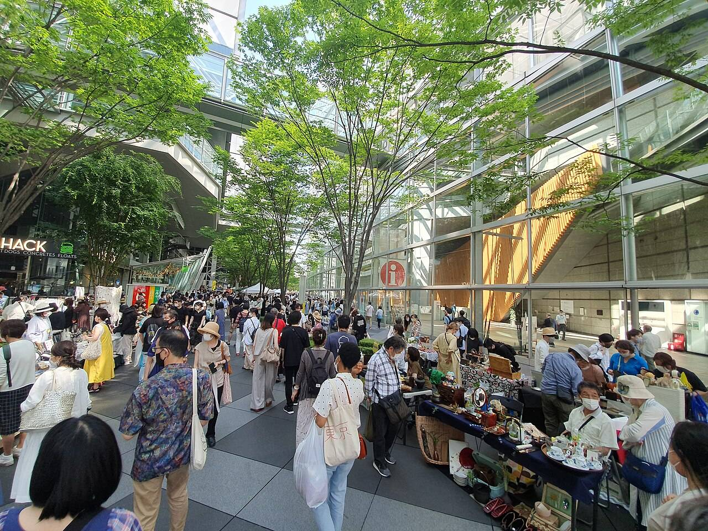
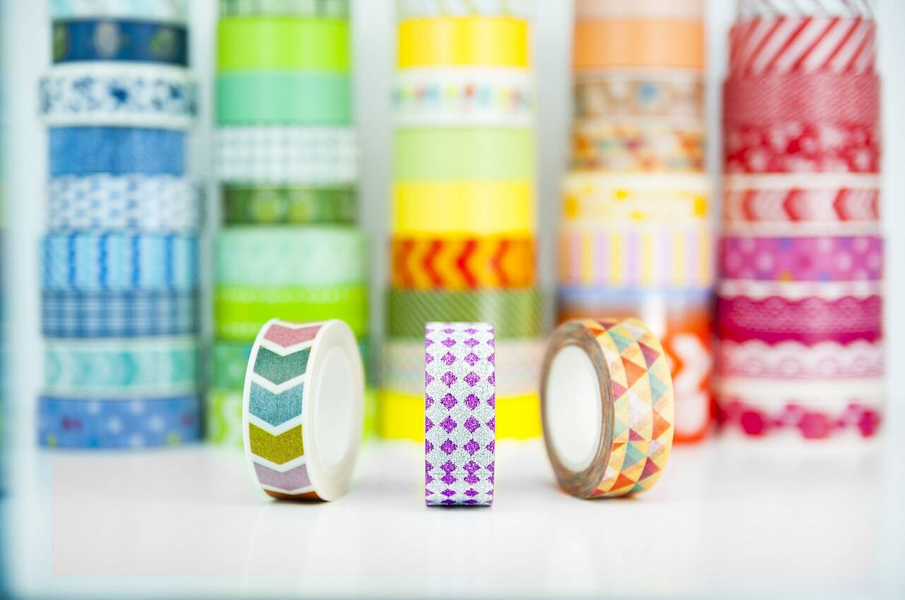
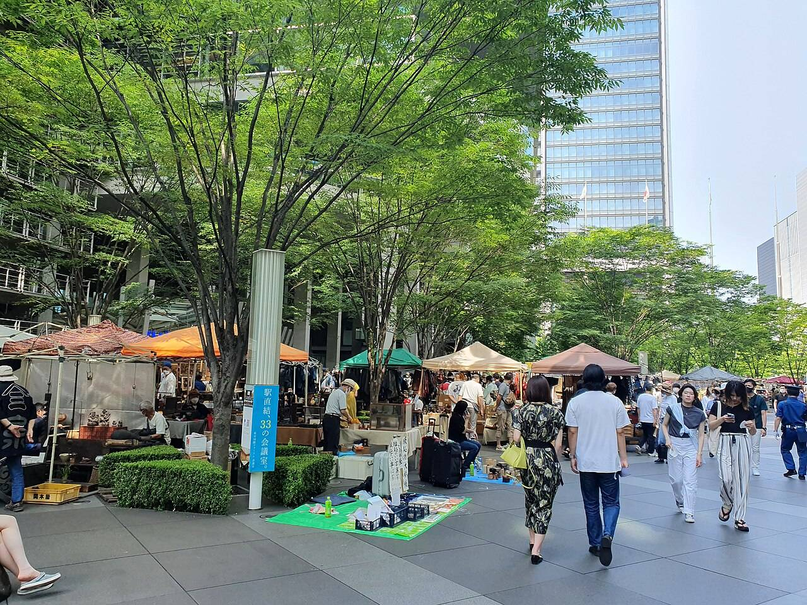
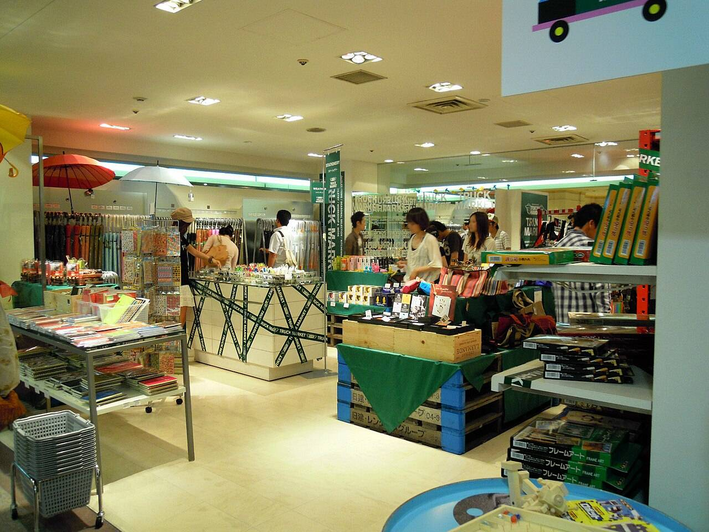
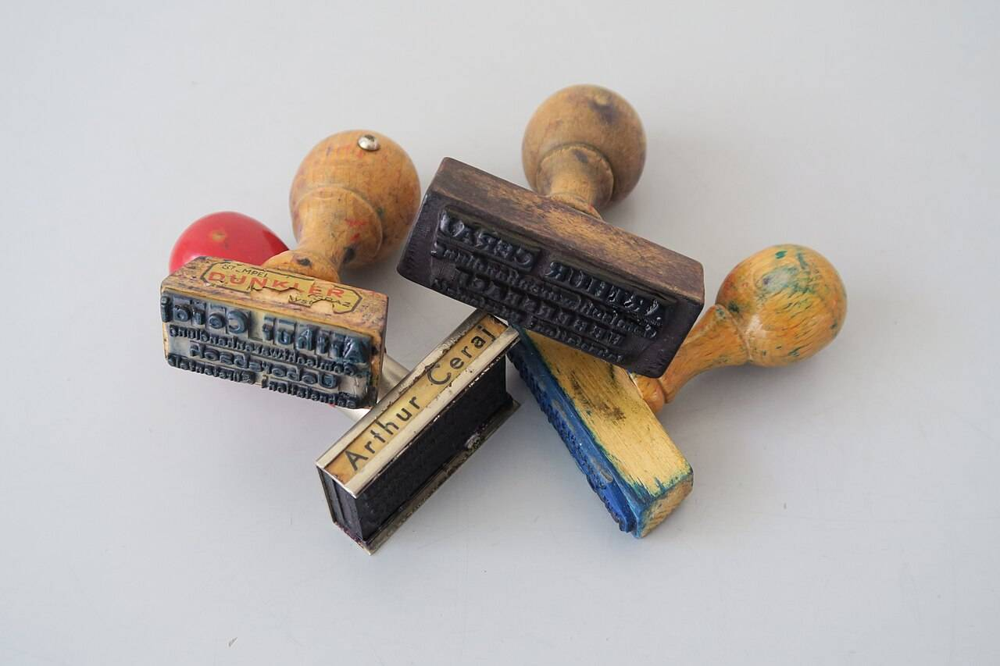
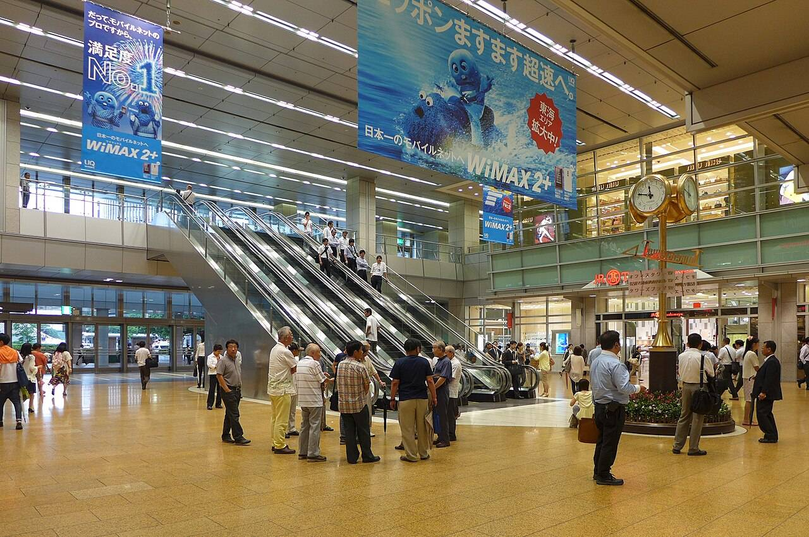

ぺたり文具店 ポップアップストア
限定16品。うち10品は通販でも。
11月20日（金）→12月3日（木）
みなと中央駅ビル ミナテラス 7階 催事場｜10:00〜20:00（最終日は17:00まで）

14にち
テープ
660円
限定16品シール・テープ・ノート・スタンプ
どれも、このポップアップのために刷った物と、この会場でしか売らない物です。値段は税込。「通販でも」の10品は、会期中このページのカートから買えます。

写真はマスキングテープを色ごとに積んだ棚（ぺたり文具店の品ではありません）。Emile contributor／Wikimedia Commons／CC BY-SA 4.0
品切れのとき：会場で売り切れた品は、一覧に「会場は売り切れ」と書き、次に入る日を会期の暦に書きます。通販の品は、受付の数に届いたら「受付を終えました」に変わります。

写真は催しの日の人出（東京国際フォーラムののみの市。会場ではありません）。Syced／Wikimedia Commons／CC0
11月20日から
14日間
毎日 10:00〜20:00、最終日の12月3日（木）だけ17:00まで。会期の14日を刷ったのが「14にちテープ」で、その日の欄に、入荷と空いている時間を書いています。
- 20日金・初日
9:30から整理券（先着200名）
- 21日土
混みます。名入れはんこは整理券
- 22日日
混みます
- 23日月・祝
混みます
- 24日火
15時台が空いています
- 25日水
ことりのはんこ 再入荷
- 26日木
19時からは空いています
- 27日金
切手の形のシール 再入荷
- 28日土
はんこを彫る実演 13:00・15:00
- 29日日
混みます
- 30日月
15時台が空いています
- 1日火（12月）
3本セット 再入荷
- 2日水
19時からは空いています
- 3日木・最終日
17:00まで。通販は23:59まで
初日の11月20日（金）だけ、整理券を配ります
9:30から、7階の東エスカレーターを上がった所で配ります。先着200名、お一人さま1枚。10:00から番号順に20名ずつご案内し、11:30からは整理券なしで入れます。21日（土）からは整理券はありません（名入れはんこの受付だけ、その日の整理券を会場で配ります）。

写真は松山の店の中の催事の売り場（ミナテラスではありません）。DVMG／Wikimedia Commons／CC BY 3.0
ミナテラス
7階 催事場
- 場所
- みなと中央駅ビル ミナテラス 7階 催事場（東エスカレーターを上がって正面）
- 時間
- 10:00〜20:00（最終日 12月3日（木）は17:00まで）
- 入場
- 無料。初日の11月20日（金）だけ整理券
- 支払い
- 現金・クレジットカード・交通系IC・QRコード決済
- 買える数
- 14にちテープはお一人さま3点、3本セットは2点まで
- 名入れはんこ
- その場で彫って約20分。1日40本まで、受付は19:00まで

通販で買えるのは
10品
| 受付 | 11月20日（金）10:00 → 12月3日（木）23:59 |
|---|---|
| 発送 | 12月8日（火）から、受付の順に。届くのは発送の1〜3日後です |
| 送料 | ネコポス 370円（シールとテープだけ、4点まで）／宅配便 880円。 5,500円以上は送料無料 |
| 支払い | クレジットカード・コンビニ払い（コンビニ払いは3日以内に） |
| 買える数 | 14にちテープは、会場と同じくお一人さま3点まで |
| 返品 | 届いて7日以内の、開けていない物。印刷のずれ・汚れは、開けていても取り替えます |
知っておいてほしいこと
- 14にちテープは和紙なので、手で切れますが、切り口が少しほつれます。
- ころがるノートの方眼は 5mm で、罫の色はきみどりです。濃い色のペンでないと罫と見分けにくいことがあります。
- 回転日付印は 2026年11月〜2027年12月の日付まで回ります。
通販の10品
上の丸の写真は木の柄のゴム印（ぺたり文具店の品ではありません）。Iswoar／Wikimedia Commons／CC BY-SA 4.0
中央改札から
7階まで約4分
- 改札みなと中央駅の中央改札を出て、右へ40m
- 東入口ミナテラスの東入口から入り、すぐ左の東エスカレーターへ
- 7階降りて正面が催事場。エレベーターも東入口の横にあります

写真は名古屋駅のコンコース（みなと中央駅ではありません）。Wpcpey／Wikimedia Commons／CC BY-SA 4.0
- 電車
- みなと線・海岸線「みなと中央駅」。駅ビルの中なので、雨の日も外に出ずに来られます
- バス
- 駅前ロータリー 2番のりば「みなと中央駅」で降りて、北口から東入口まで1分
- 車
- ミナテラス駐車場（320台）。館内で2,000円以上のお買いもので2時間無料。土日の午後は満車になりがちです